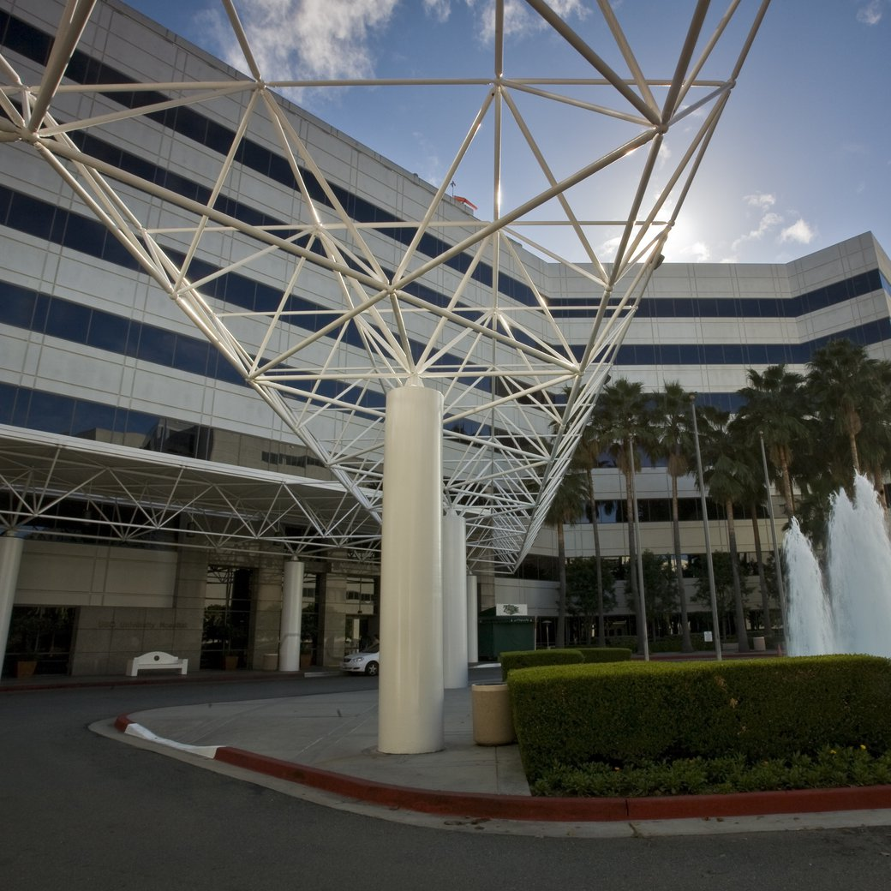
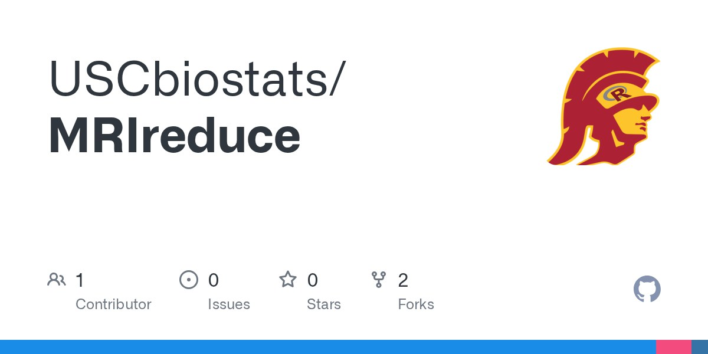
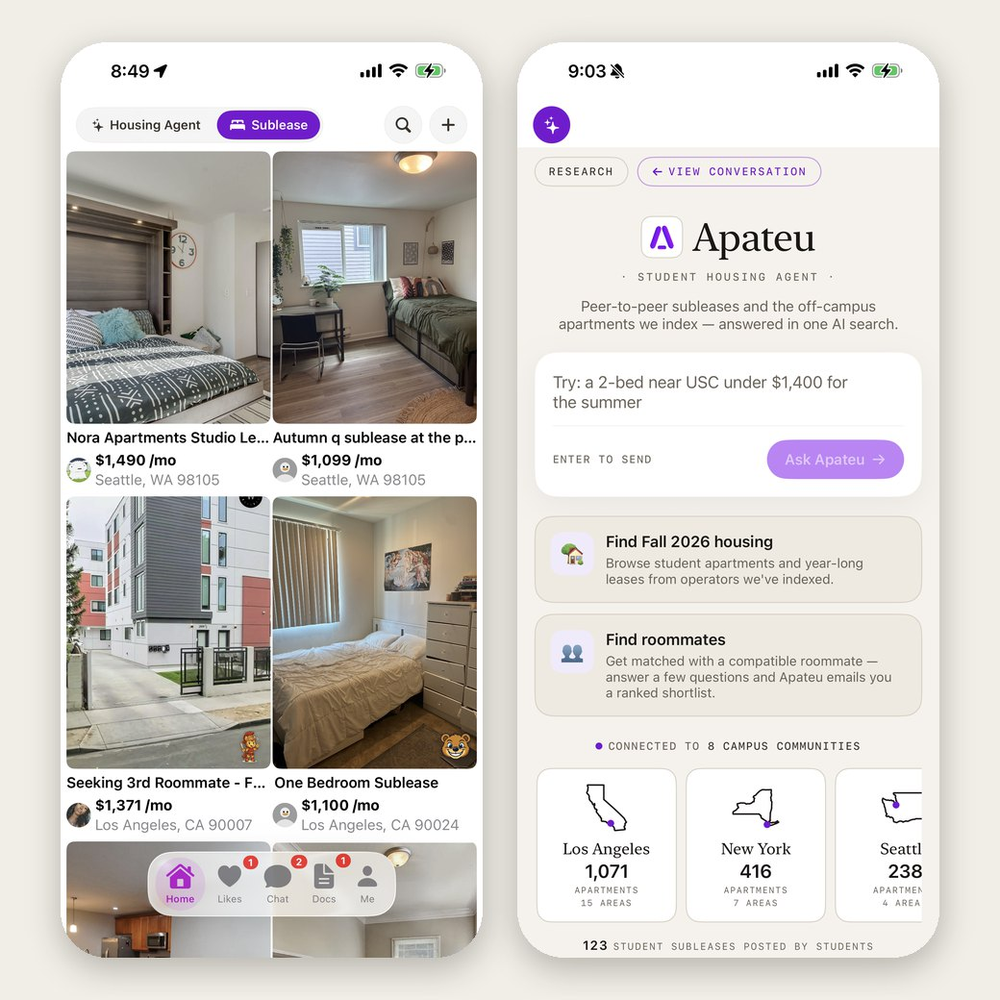
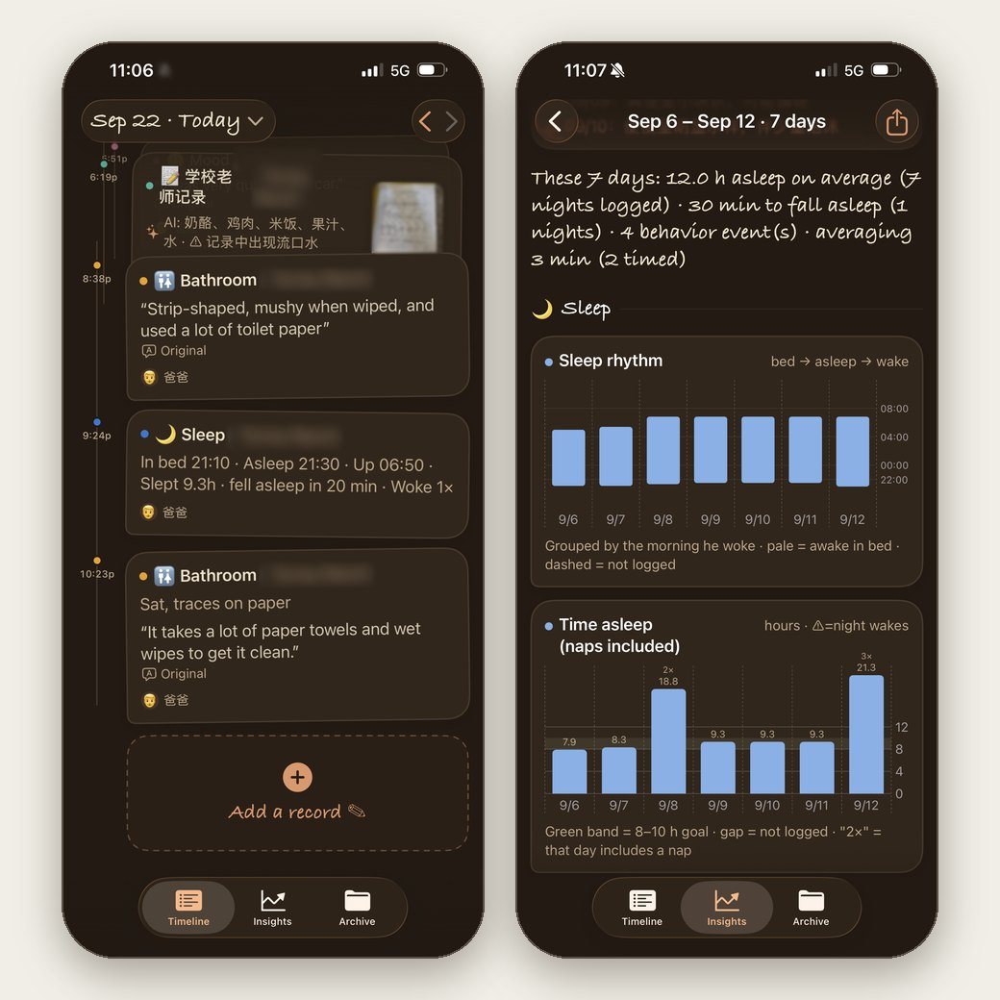
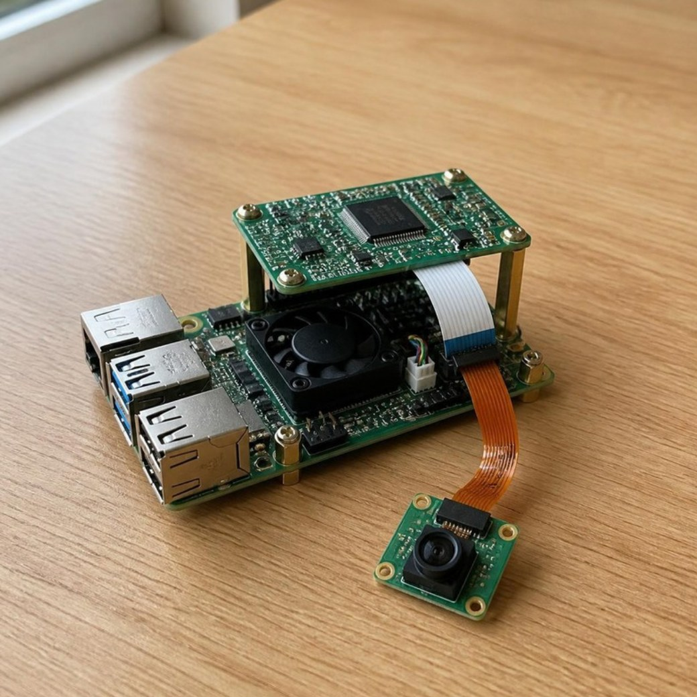
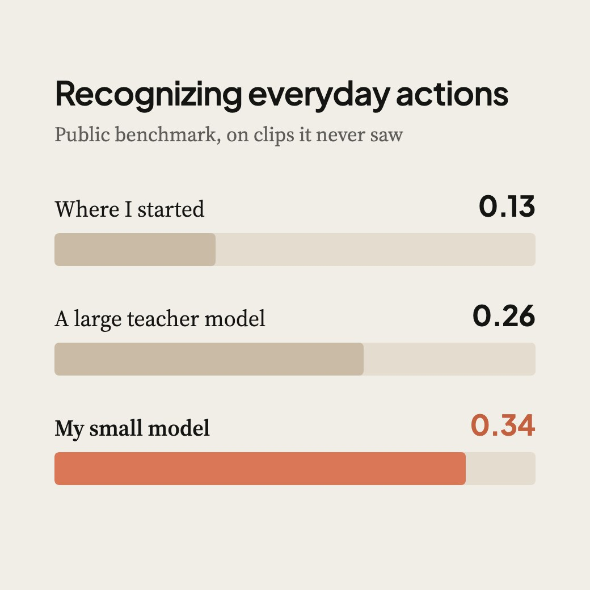
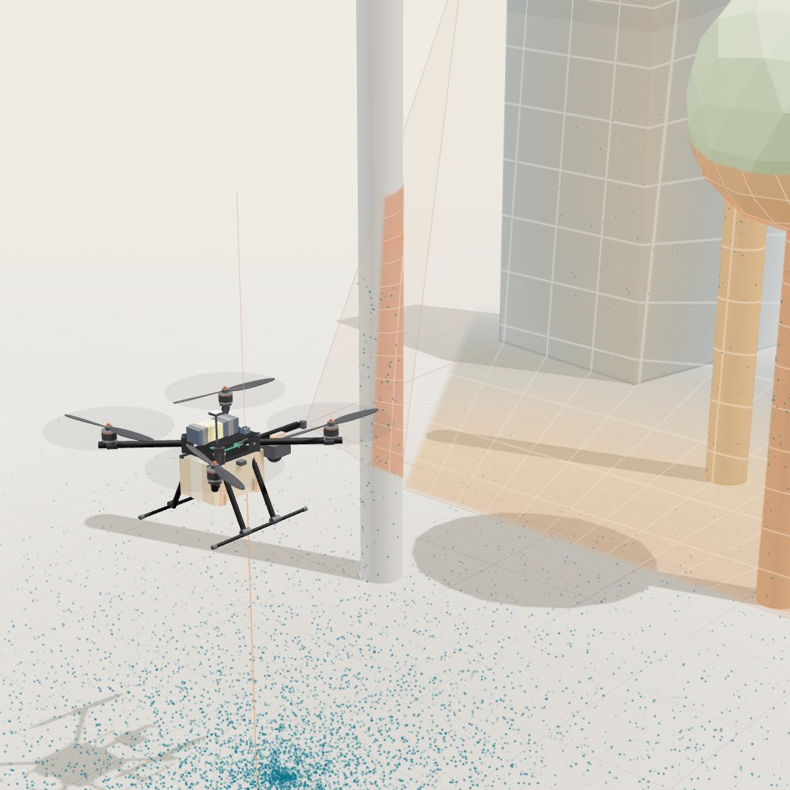

About
I live in Los Angeles. I’m a data scientist at the Keck School of Medicine of USC, where I work on NIH-funded studies of the brain, genes and the immune system. I also build AI products. I was the founding engineer of Apateu, a student-housing app with an AI search engine, and I built Moonlight, an iPhone app for parents of children with autism. Now I’m building the vision system for a home robot: a small camera that understands what people are doing. For fun, I’m also writing the software for a delivery drone.
I grew up in China and studied statistics at Southeast University (东南大学) in Nanjing, then mathematics at Utrecht University and analytics at USC.
Things I’m interested in
Statistics and data science
I was a statistician before I was an engineer. I still start every project the same way: what would convince me this result is real?

Medical research at USCData scientist · Keck School of Medicine of USC, Division of Biostatistics · 2023 to presentI analyze the data for five NIH-funded studies: air pollution and the aging brain, childhood adversity and DNA, the immune system after trauma, hormones and the teenage brain, and hearing loss in children on chemotherapy.
MoreLess
My main project asks whether traffic pollution ages the brain. For it I created MRIreduce, an open-source R package on CRAN that turns brain scans into data a model can use, and then traced which brain regions carry pollution’s effect on memory in about 1,600 older women. I’m first author on the paper, now under revision.
- Found a 36-gene immune signature after trauma that held up across eleven patient cohorts and three lab platforms (AAST 2026 abstract).
- Built a deep-learning model that predicts hormone levels from brain scans of about 9,100 teenagers, and shows which brain regions drive each prediction (OHBM 2026 abstract).
- Built PedsHEAR, a web tool for doctors that estimates hearing-loss risk for children on cisplatin chemotherapy, around my advisor’s model.

AI engineering: building apps people use
I build apps on top of language models. Most of the work is deciding what the model may say and what the code has to check.

ApateuFounding engineer · with Danbi Jang · 2025 to September 2026A student-housing app. Students sublease to each other with a lease signed in the app, and an AI agent answers “a 2-bed near USC under $1,400” with real buildings and today’s prices.
MoreLess


Danbi and I both tried to sublease our apartments and hated it: a group chat, no contract, no way to know if the other person was real. So we built the app we wanted and launched it on the App Store in September 2025.
I built the whole stack (SwiftUI, Node, MongoDB) and the AI agent on Claude’s API. Under the search sits an index I built that reads prices straight from property managers’ own websites: 3,700+ buildings in five metros.
- 1,000+ registered students by August 2026, doubled in six months.
- Ten campus Instagram accounts run by AI agents we built: about 6,000 followers, nothing spent on ads.

MoonlightAI engineer / full-stack software engineer · San Diego · 2026An iPhone app for parents of children with autism. Parents log the day with a photo or a voice note, and the app turns weeks of notes into charts a doctor can read.
MoreLess


Parents of a child who can’t always say how they feel keep track of a lot, then get asked to remember weeks of it in a short appointment. Moonlight gives them one place to log the day, and it finds patterns across weeks.
One rule shaped the design: the language model may suggest a pattern, but every number in a report comes from the database, never from the model. The app gives no medical advice. If the model drafts something that sounds like advice, code swaps it for a note to ask a doctor.
I built it end to end, from requirements with the family to version one in production in August 2026, after a four-week build. Since then the family has driven a new round of changes almost every week. SwiftUI, Node, MongoDB, OpenAI and AWS.
Putting AI on hardware
AI that works in the physical world: vision models that run on a small computer with a camera, and a drone pilot trained with reinforcement learning.

A home robot’s eyesAI engineer · since summer 2026A home robot that helps families of children with autism. I’m building its eyes: a small camera computer that understands, second by second, what each person in the room is doing, while the video stays in the home.
MoreLess
How it works:
- Public video first. The model learned everyday actions (sitting, eating, reading, playing) from large public video datasets.
- People, not just pixels. The camera finds each person, works out their pose and follows them over time. Once a second it sums up each person, and a small transformer reads the last few seconds to decide what they are doing.
- A big teacher for a small student. A large vision-language model scores clips offline, and my small model learns from it and from human labels. On the benchmark, the student ended up beating its teacher.
- Built for a tiny computer. It’s designed for a Raspberry Pi 5 with an AI chip. The model I trained needs a few milliseconds of one processor core per person each second.
- Measured honestly. Each version is scored once, on clips it never trained on, and a model stays only if it beats a simpler one.


An autonomous delivery droneA fun side project · since summer 2026Just for fun: software for a drone that carries a package from A to B around trees, poles and buildings. A pilot trained with reinforcement learning does the flying, and simple safety rules it can’t override have the last word. It flies in simulation; the aircraft itself isn’t built.
MoreLess
Live 3D model · drag to orbit, ⌘/Ctrl + scroll to zoom · drag sideways to orbit
- Camera depth grid, near to far
- Lidar returns
- Beams down and up
I wrote a simulator in PyTorch that flies 2,000 virtual drones at once on one GPU, and trained the pilot in it with PPO, a reinforcement-learning method.
The safety rules sit between the pilot and the drone: never fly faster than you can stop, and treat anything the sensors can’t see as blocked. When the pilot found two ways to crash that the rules had missed, I fixed the rules and tested them on 9,840 simulated flights without a crash.
After two hours of training, the pilot reached the goal on 225 of 240 courses it had never seen, with one crash.
Education
- 2023M.S. in Analytics, University of Southern California, Los Angeles
- 2021M.S. in Mathematics, Utrecht University, the Netherlands
- 2020B.S. in Statistics, Southeast University (东南大学), Nanjing
Selected writing and software
- 2026Traffic-related air pollution, brain structure and cognitive aging in older women (WHIMS-AIR).
- 2026MRIreduce: ROI-based transformation of neuroimages into high-dimensional data frames.
- 2026Hormone-sensitive gray matter during early adolescence: deep learning and biasing confounds.
- 2026Same storm, different dataset: reproducibility of leukocyte transcriptomic changes after blunt trauma.
- 2025HDCIT: a high-dimensional causal inference test for single exposure, multiple mediators and single outcome.